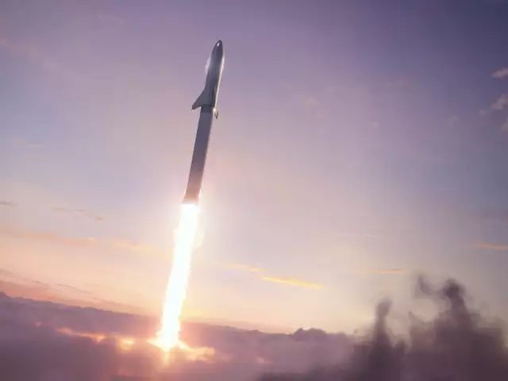
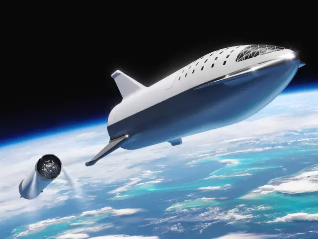
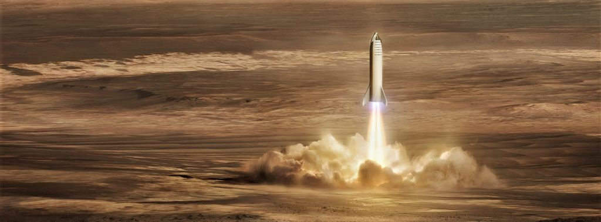

Tribute Page | Elon Musk
The man behind SpaceX, Tesla, SolarCity, OpenAI, and
TheBoring Company.

Some people don't like change, but you need to embrace change if the alternative is a disaster.
ELON MUSK
Elon Reeve Musk is a business magnate and investor. He is the founder, CEO, and chief engineer of SpaceX; angel investor, CEO, and product architect of Tesla, Inc.; founder of The Boring Company; and co-founder of Neuralink and OpenAI. With an estimated net worth of around $238 billion as of September 26, 2022. Musk is the wealthiest person in the world according to both the Bloomberg Billionaires Index and Forbes' real-time billionaires list.
Elon Musk's life Timeline
- June 28, 1971 : Born in South Africa
- Age 12 : Creates and writes a video game called Blastar; sells it for the equivalent of $500
- 1988 : Graduates from Pretoria Boys High School with distinctions in science and computer studies
- 1989 to 1991 : Attends college at Queen’s University in Kingston, Ontario. Then transfers to the University of Pennsylvania; completed a BS in Economics (Wharton) and a BA with a major in physics
- 1995 : Moves to Silicon Valley; defers graduate program in applied physics and materials science at Stanford University to join the Internet boom
- July 2002 : eBay acquires PayPal for $1.5 billion in stock, of which $165 million goes to Musk
- 2002 : Becomes an American citizen
- 2002 : Founds SpaceX
- 2004 : Invests in Tesla Motors
- October 2008 : Becomes Tesla’s CEO
- June 2012 : Tesla begins deliveries of the all-electric Model S
- 2014 : Announced Open-Sourcing Tesla Technology
- June 2014 : Committed to building a SolarCity advanced production facility in Buffalo
- January 2015 : Donated US$10 million to the Future of Life Institute
- June 2015 : Announced Hyperloop design competition
- December 2015 : Announced creation of OpenAI, an Artificial Intelligence company
- September 2016 : Revealed Mars colonization exploration architecture details
- May 12, 2017 : Hyperloop One announced first successful test run
- July 2018 : Attempted to provide assistance to rescuers during the Tham Luang cave rescue
- January 2019 : Traveled to China for the groundbreaking of Tesla's Shanghai Gigafactory
- November 2020 : Elon Musk has topped Microsoft founder Bill Gates to become the world's second richest person.
HIGHLIGHTS
- 2020-2021 : Try to launch a full BFR, and get a spaceship into orbit.
- 
- 2022 : Launch two missions to Mars full of cargo and supplies (but no people).
- 
- 2022-2023 : Land the first Big Falcon Spaceship on Mars.
-

- 2023 : Launch the first people with BFR and send them around the moon.